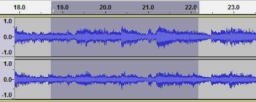
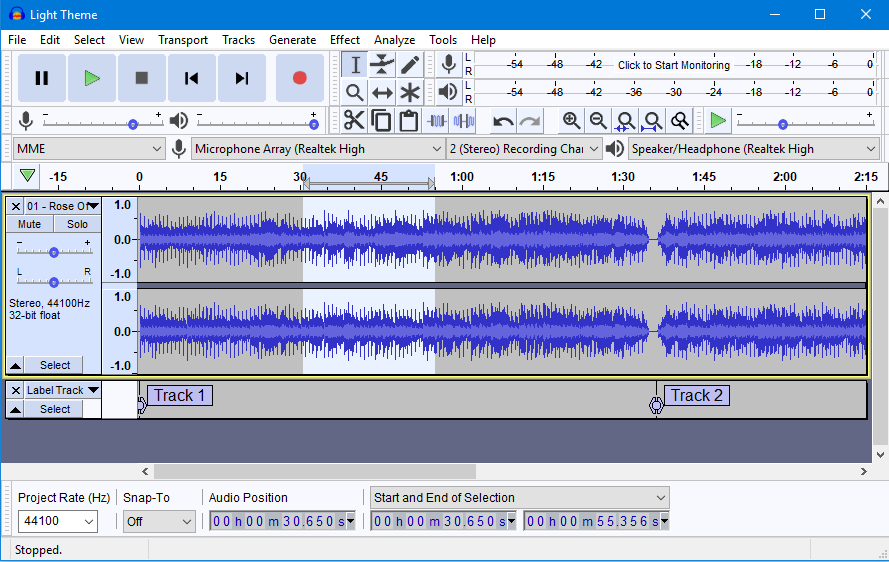
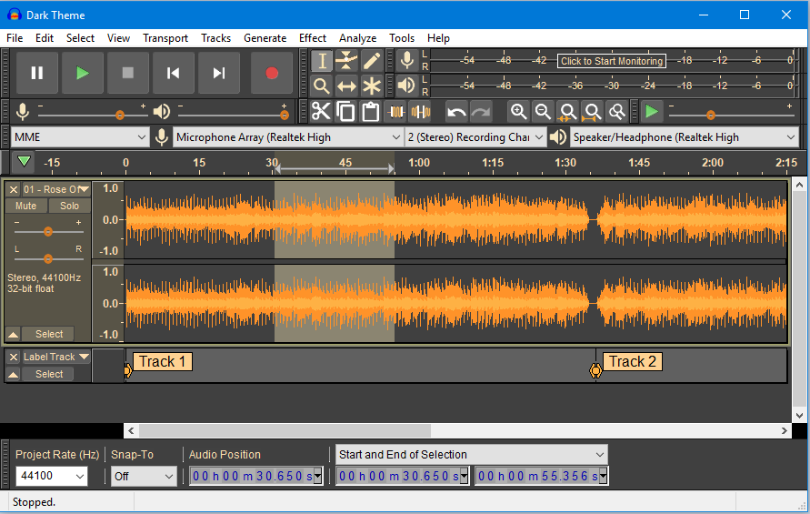
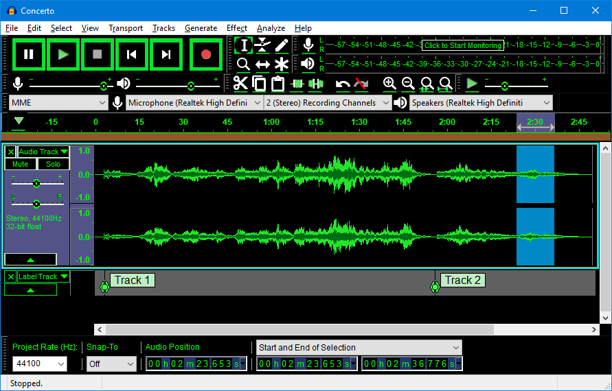
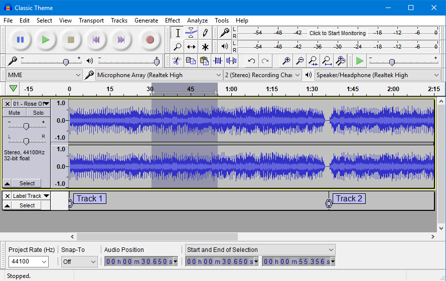
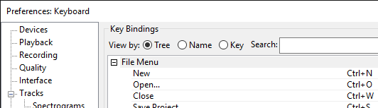
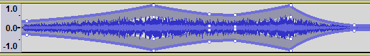
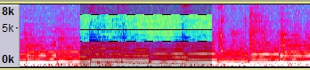
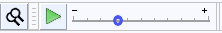
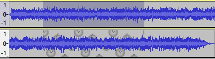

Audacity Tour Guide
There are many links on this page (highlighted in blue). Click the links to go to the more detailed pages in the Manual.
Contents
- Record, Play and Edit - the basics of Audacity
- Saving your work - audio formats
- Customizing Audacity - themes, colors, preferences, layout and plug-in extensions
- Faster ways to do things - shortcuts and Macros
- Changing the loudness of your audio - fades, Amplify, pan and gain
- Noise in your audio - reducing, adding, fine tuning
- Navigation and changing speed and pitch
- Lots of things you might not know Audacity could do
Record, Play and Edit - the basics of Audacity
Audacity can Play  Record
Record  and edit audio. To play or record, click on the button on the toolbar:
and edit audio. To play or record, click on the button on the toolbar:
- Transport Toolbar Play
 and Record
and Record  buttons
buttons
Hold Shift down, and those two buttons change to Loop Play  and Record New Track
and Record New Track  .
.
- Transport Toolbar with Shift held down
Loop Play
Hold Shift and the play button will change from  to
to  the Loop Play button. Click on this and you will get Loop Play where the audio plays over and over until you stop.
the Loop Play button. Click on this and you will get Loop Play where the audio plays over and over until you stop.
New Track Record
Hold Shift and the record button changes from  to
to  Record New Track. Click, (or use shortcut Shift + R ) to start recording in a new track at either the current cursor position or at the beginning of the current selection.
Record New Track. Click, (or use shortcut Shift + R ) to start recording in a new track at either the current cursor position or at the beginning of the current selection.
By default Audacity will record at the end of the currently selected (or only) track
Select and Edit
Select audio by dragging, before using buttons like cut, copy and paste to rearrange the audio. You can also apply an audio effect to the selected audio.
- 
- Example of a stereo audio track with some audio selected - the selection is the dark gray section
For more details on Play, Record and Edit see the Getting Started section of the Manual.
Punch and Roll Record
This enables you to to correct errors easily during the course of a recording session.
- You can stop, back up over a mistake, and continue recording, resulting in one track that eliminates the errors and is properly timed, without the use of cutting, pasting, and clip-moving commands, or mixing of multiple tracks.
- You can do rough editing as you go, with minimal interruption of your performance and less work left until afterwards.}}
For more details see the Punch and Roll Record page.
Saving your work - audio formats
Save
Audacity makes a distinction between saving audio in Audacity project format which only Audacity can open, and exporting audio in formats like WAV and MP3 for use in other applications. Audacity project format is made up of multiple small files which are stored in the _data folder for the project and alongside that, an AUP file which says what order the files are in. To reopen a saved project, open the AUP file, not the multiple small files.
Export
Use Export if you want to create a file in an audio format for playing outside of Audacity.
- LAME: Do you want to convert a recording to compressed MP3 format? Audacity can, but it needs an add-on to do so. The add-on is a library called ‘LAME’. A free copy of LAME that is compatible with Audacity is available from the lame.buanzo.org site, as per these instructions (Buanzo is a technology and security consultant from Argentina).
- FFmpeg: The optional FFmpeg library allows Audacity to import and export a much larger range of audio formats including M4A (AAC), AC3, AMR (narrow band) and WMA. Audacity can import audio from most video files by using FFmpeg.
Customizing Audacity
Themes
Audacity has four pre-configured, user-selectable, themes.
|  |  |  |  | ||||
| Light theme | Dark theme | High Contrast theme | Classic theme |
See the Themes page for details.
Waveform colorways
Having selected a theme, you can optionally change the colorway of the individual waveforms displayed in your project. See Audio Tracks page for details.
Preferences
Audacity has myriad settings that adjust its behavior. You don't have to adjust these, but they are there, available for you to adjust in Preferences if you want to.
Layout
You can change the layout of Audacity from that shown on the front page by moving, resizing, hiding and showing the various toolbars. See the Customizing Toolbar Layout page for details.
Effects Plug-ins
You can add to the effects available in Audacity using plug-ins. Some of these have very nice looking interfaces with graphs and buttons and provide similar effects with different features, or effects that Audacity does not ship with. There are several types of plug-in. The Nyquist type of plug-in, for example, is Audacity's own plug-in format. Nyquist plug-ins can be made just by writing text in a file, so contributors to Audacity often use this format to create new effects. Thoroughly tested plug-ins are available from Download Nyquist Plug-ins. Experimental plug-ins, such as those for the hard task of removing pops, clicks and "ess" sounds from a voice recording, can be found on the Nyquist board on Audacity Forum.
Faster ways to do things - shortcuts and Macros
- 
- A fragment of the keyboard preferences dialog showing some shortcuts
Shortcuts
Many buttons and menu commands have pre-defined keyboard shortcuts assigned. You can modify these or add your own with Keyboard Preferences (in the Edit menu on Windows and Linux or the "Audacity" menu on Mac).
Macros
Ever want to do the same thing to a large number of audio files, for example remove noise from them and convert to MP3? Macros is the feature for this. Give it a list of files to work through and tell it what sequence of things to do. Programmers may want instead to use Scripting, an experimental but more flexible version of Macros. This needs a free experimental module called mod-script-pipe and experience in programming.
Export Multiple
You can save several audio files at once, rather than saving them one by one.
Changing the loudness of your audio - fades, Amplify, pan and gain
- 
- Mono track showing an amplitude Envelope
Amplify
The Amplify audio effect makes audio louder or quieter. Two other effects that modify loudness are Fade In and Fade Out. These are often used at the beginning and end of audio.
- Envelopes provide a more flexible way to control loudness. You will need to select the Envelope Tool or Multi-Tool to use envelopes. With envelopes you can graphically control when audio gets louder and quieter.
Pan and Gain
These are the two sliders in the track's Track Control Panel. The Gain slider enables you to set the loudness for the track. The Pan slider lets you make the audio louder on the left or the right. You can move these sliders to affect the audio as it plays.
Mute and Solo
These two buttons are in the track's Track Control Panel. Click the button to silence this track when playing, click again to hear it again. Click the button to play just this track. Click again to release the button.
Auto Duck
This reduces (ducks) the volume of one or more selected tracks whenever the volume of a single unselected "control track" placed underneath reaches a particular threshold level. It can be used to create voice-overs for podcasts or DJ sets, for automatic "ramping" of background music in radio productions and for turning down a voice in original language as soon as its translation kicks in.
Mixer Board
An alternative view to the audio tracks in the main tracks window, and is analogous to a hardware mixer board. Each audio track is displayed in a Track Strip with its own pair of meters, gain slider, pan slider, and mute/solo buttons, mirroring that track's controls in its Track Control Panel.
Noise in your audio - reducing, adding, fine tuning
- 
- Mono track in Spectrogram view showing a Spectral Selection
Spectral Selection
This is a special feature within Sectrograms, which lets you view the frequency content of audio then edit just selected frequencies. This is particularly useful for voice recordings. Among other purposes, Spectral Selection and editing can be used for cleaning up unwanted sound by removing particular frequencies, enhancing certain resonances, changing the quality of a voice or removing mouth sounds from voice work.
Noise Reduction
Audacity can remove some kinds of noise from a recording. Noise Reduction is an ‘audio effect’, one of the fiddlier audio effects to use. This effect works best with fairly constant noise like background hiss. You first select audio that is just the noise and create a ‘noise profile’. Once Audacity knows the noise profile, it can reduce the loudness of noise of that kind in audio you select.
Notch Filter
This can be used to help you remove mains hum or electrical whistle with minimal damage to the remaining audio, by cutting a "notch" out of the frequency spectrum at that point.
Generate Noise
Audacity can add noise to a recording too. Three different types of noise can be generated. White noise has the greatest ability to mask other sounds, as it has similar energy at all frequency levels. If you want to add some room noise to make silences more realistic, try adding it at 0.001 amplitude.
Draw Tool
If you Zoom in enough on the audio you can edit individual samples of audio. Usually there are 44100 sample dots for every second of audio. This gives you an idea of how the audio is stored in the computer. Very occasionally there may be a click in the audio which is better removed with Draw Tool than with Click Removal or the Repair effect. Repair is best used when zoomed in a lot as it only works with short pieces of audio.
Play-at-Speed
Audacity has a Play-at-Speed Toolbar with a small button with green arrow pointing right, looking like the larger button with green arrow for ‘Play’. Set the speed to go faster or slower using the slider to the right of the button. The speed change also changes the pitch. This is a temporary change during playback. To make a permanent change to speed and pitch use the Change Speed effect (below).
- 
- Toolbar
Scrubbing and Seeking
This is the action of moving the mouse pointer right or left so as to adjust the position, speed or direction of playback, forwards or backwards, listening to the audio at the same time - a convenient way to quickly navigate the waveform to find a particular event of interest. When Scrubbing or Seeking you can also use the mouse wheel to change the speed of the scrub or seek so this is another way to change playback speed.
Change Speed, Change Pitch, Change Tempo
You can speed audio up or slow it down by applying an effect that changes the audio:
- Use Change Speed to make audio faster or slower and higher or lower pitched.
- Use Change Pitch to change the pitch of a selection without changing its tempo (speed).
- Use Change Tempo if you want the pitch to stay the same when speeding up or slowing down. Change Tempo does not always work so well with large changes in speed and the end result may sound a little strange.
Time Tracks
A Time Track is a graph line you drag on to change the amount of speed-up or slow-down over time, instead of it having to be a constant speed change. As with Play-at-Speed the speed changes immediately without waiting to run an effect, but the changes do apply when exporting unless you delete the Time Track. So export a copy of your work to WAV format before using Time Track to be safe.
Lots of things you might not know Audacity could do
- 
- A pair of Sync-Locked mono tracks: selection extends automatically to the second track
Sync-Lock
When you have a mix (several tracks above each other which play together) and everything is nicely lined up, an edit in one track such as cutting a piece of audio can cause the mix to no longer to play in sync. To keep tracks aligned despite cutting, pasting or shifting audio, use Sync-Lock Tracks.
Labels
Use a Label Track to mark or annotate audio. In conjunction with Sync-Lock you can keep the labels and audio in step.
Undo and Redo
These are most useful when working with effects. After you have applied an effect you might change your mind. The button or menu item will let you undo the change. The History menu item lets you look further back in time and undo more changes in one step.
Truncate Silence
A convenient effect to apply to recordings of interviews and speeches that removes long silences. You can tell it what to count as a long silence, the loudness level and duration, and how much of each long silence to remove.
Snap-To
When making selections it sometimes is helpful for the selection boundaries to be automatically moved to the nearest second (or some other unit of time measurement). If you Snap-To seconds your selections will always be whole numbers of seconds - you can’t select half a second of sound for example. Set the time format to seconds or frames or whatever unit of time you want to snap to as well as enabling Snap-To.
Multi-Clip
Many people have a single piece of audio on each audio track. However, you can have multiple pieces of non-overlapping audio on the same track. These are called clips. Clips can be created with Split and joined back together by clicking on the dark line boundary between clips. If you click the Time Shift Tool you can drag clips around to different positions on the track, or drag them to different tracks.